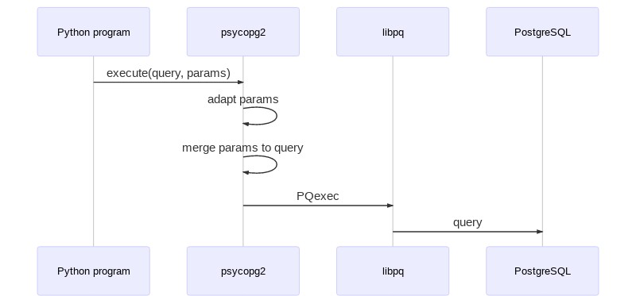
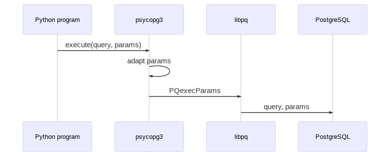
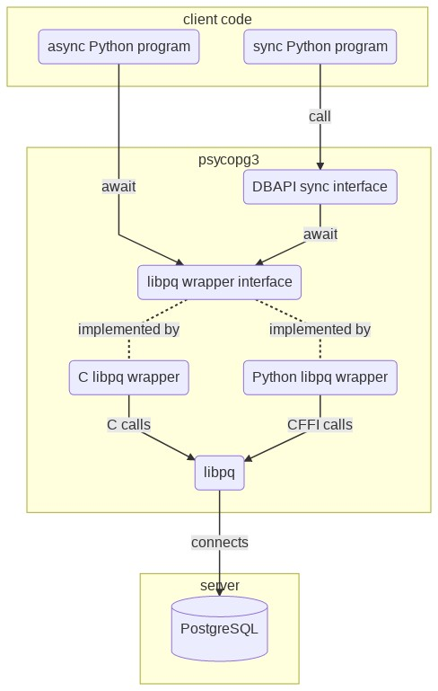

I have been psycopg2 maintainer since 2010; before that, git says that my first contribution was in 2005. At that time, psycopg (one) was the tool to use, and psycopg2 was an interesting experiment.
In several years of using psycopg2 daily and reading about expectations, frustrations, surprises experienced by other users, I have been making my mind about a better system, and if I had to release a version incompatible with the past, those are some of the things I would change.
Query parameters adaptation
psycopg2 composes queries (replacing the placeholders in the SQL strings with the values supplied by the user) on the client, and sends a complete query to the server.
It does its job right, so it doesn't result in SQL injection vulnerabilities. However the correct way of doing it, as far as PostgreSQL is concerned, should be to send the query and its parameters separately (i.e. using the PQexecParams libpq function rather than PQexec).
Separating the statement from the parameters improves performance and memory usage at parsing time. However the behaviour of the library would change slightly, which is the reason why server-side merging hasn't been used so far. For instance:
- PQexecParams only supports one command at time: it wouldn't be possible anymore to send a batch of queries separated by semicolon in a single execute() call.
- psycopg2 helps solving some type casting ambiguities by attaching casts to the types represented as strings (e.g. the date 1/1/2020 is currently merged to the query as '2010-01-01'::date); using PQexecParams the trick wouldn't be available anymore. It might be possible maybe to suggest the type in other ways, but if that's not the case then queries should be modified by applying explicit casts next to their placeholders (e.g. %s::date).
- Custom-defined adapters should be rewritten.
The main difference between the old adaptation protocol (called ISQLQuote) and the new one (which doesn't have a name yet, it could be probably called ISQL) is the use of the quotes, whereby the string O'Connor is passed to the query as 'O''Connor', with wrapping quotes and doubled-up quotes in the content. In ISQL the string wouldn't undergo the same transformation to add and escape quotes; other types would only have to be converted into strings in the PostgreSQL syntax, but wouldn't need to be wrapped in quotes to create a SQL literal. Using ISQL as the fundamental adaptation steps there would be some interesting improvements:
- adapting composite types and arrays would be a much more straightforward matter,
- it opens the door to the use of prepared statements, but especially
- the COPY FROM operation could take an iterable object yielding Python types instead of a file-like object to read; similarly COPY TO could return an iterable object yielding Python types.
I mean: this would be great! COPY is by far the most efficient way to insert data into the database: using it via psycopg2 requires exposing the data via a file-like object, which not only is a weird interface, but it requires people to roll their own adaptation format. The target for copying data into the database using psycopg3 should be as easy as:
curs.copy("COPY song (artist, title) FROM STDIN", [ ("Sinead O'Connor", "Nothing Compares 2 U"), ('REM', "Losing my Religion"), ])
Context managers and transactions
psycopg2 follows a de-facto standard (which was widely discussed but which never landed in the DBAPI specs), whereby connections used as context managers wrap a transaction, committing it if exiting on success or rolling it back in case of error. So the way to use it is something like:
conn = connect(DSN) try: # these are two separate transactions with conn: do_something(conn) with conn: do_something_else(conn)
This idea has its usefulness, but it is a very surprising behaviour: developers usually expect the same resources released by close() to be released on context exit (as files, sockets, and even DBAPI cursors do). It also gets in the way of managing different life cycles on the connection, for instance if there is the connection is taken from a pool:
with pool.getconn() as conn: with conn.cursor() as curs: do_someting(curs)
then it is expected (and reasonably requested) that the connection is returned to the pool at the end of the block.
Talking about transactions, PostgreSQL support for SAVEPOINT makes possible to implement nested transactions (already implemented on top of psycopg2 e.g. by Django and in a stand-alone module). This seems to ask for a different context than the connection-scope one. So maybe it would be useful to leave the latter to the management of the resource, releasing them on connection context exit, and to add an explicit method to start an atomic block (either a transaction or a savepoint, according to the current connection state):
with connect(DSN) as conn: with conn.transaction(): do_something() with conn.transaction(): do_something_nested() with conn.transaction() as tx: do_something_else() # we were just testing and we don't really want to do this tx.rollback() # and here the connection is closed
Optional C module
psycopg2 is a C extension module wrapping the libpq, the PostgreSQL client library. As such, in order to build, it requires a C compiler, Python, and libpq development packages. It is a relatively low bar, but it can be a pain nonetheless for beginner users.
We tried to avoid the problem by shipping a wheel package, but the experience has been far from being a success, marred by diverse issues such as the possible incompatibility between the libcrypto used by Python and by the libpq, the lack of support for musl libc/Alpine Linux (much in demand in Docker images), broken assumptions (like glibc breaking backwards compatibility)... There's just too much magic needed to work smoothly.
In the past years, mostly in order to support PyPy, a few "python-only" psycopg2 implementations have been developed: first a ctypes implementation, to which I contributed but which hasn't been maintained at the same feature level of the reference C psycopg2. This package was further forked into a cffi implementation, which seems to be more active, but whose release numbers don't follow the original ones, which is mighty confusing.
psycopg3 might follow an approach I've seen used in other extension modules such as PyYAML, which try to compile an optimized version of the library and fall back to a Python implementation if that fails. Using the C module over the Python module would be a preference at import time, but if could still be possible to enforce the use of one specific implementation, for instance using a PSYCOPG3_IMPL={C|PYTHON} environment variable, which would make the lack of the requested implementation an import time error.
Async from the ground up
The DBAPI interface is synchronous and blocking by design: connect() blocks until a connection is open, execute() blocks until the query is completed etc. This didn't stop psycopg2 to work asynchronously, exposing two different interfaces for it:
- a purely asynchronous one where the application must explicitly poll() to bring forward the connection/execution process: it breaks the DBAPI interface but allows frameworks who can't make blocking calls anyway (such as the revered Twisted) to use it;
- a coroutine-based one where the DBAPI blocking interface is respected but behind the scene psycopg2 collaborates with coroutine libraries such as Eventlet and gevent.
Needless to say, the world has gone forward, and Python now offers core support in its syntax and library to asyncio: this is the foundation that newer Python async frameworks, such as aiohttp, are built upon. A third-part wrapper, aiopg, currently helps to bridge the async mode of psycopg2 with the asyncio machinery, but of course there is some overhead, mostly caused by the fact that the C implementation of psycopg2 is a relatively thick layer, with the libpq async calls deeply buried under the C implementation of the Python connection and cursor objects and behind their interfaces.
There is a chance now to rethink how thick the C libpq wrapper should be. We can reduce the C implementation to a minimal wrapper around the libpq (replaceable by a CFFI Python wrapper if compiling C is not available on the client), using it as a foundation to build a familiar DBAPI blocking interface. A blocking behaviour is not bad in itself: it allows to write most of the programs, the ones which don't need crazy concurrency, in a simple and familiar paradigm; the async layer would be available under the hood to squeeze the best performance in programs who have embraced an asynchronous pattern and framework. Time for a picture:
Other improvements
I've written down some of the ideas to implement on a Trello board and in an issues milestone. As the board shows, some of the improvements weren't actually incompatible with psycopg2 and over the years they have already landed in in its releases; some other ones will have to wait.
Some of what could be improved over psycopg2:
async COPY methods (see issue #428);
better support for SQL_ASCII databases (which, unlike what their name suggests, are actually unencoded 8 bits, see issue #519);
return value on execute():
for record in cur.execute(query): # ...
connection and cursor-scoped adapters (currently you can scope the adaptation rules from Postgres to Python but the rules from Python to Postgres can only be global);
reorganising the extensions and extras module, which at the moment contain an heterogeneous assortment of objects, functions, constants...
I would be interested in starting the development of this project soon. If you have opinions, or interest in the project, please let us know on the Mailing List (you can subscribe here).
...and if psycopg2 has been useful so far for you and for your business and would love to see a psycopg3 even more performing and easier to use, please consider sponsoring the development, thank you! 💜